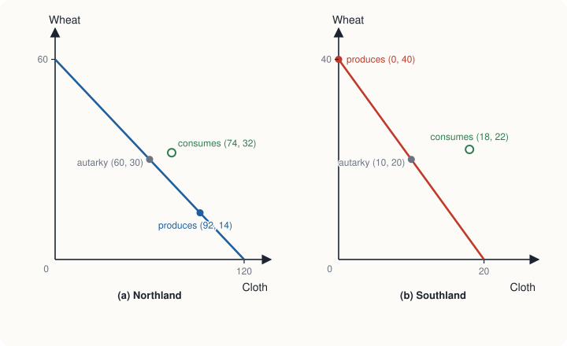
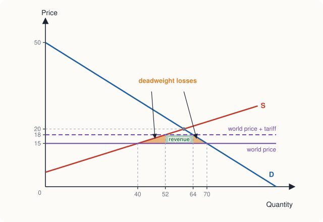

Chapter 14: International Trade¶
Comparative advantage, the gains from trade, and the effects of tariffs
Learning outcomes
After studying this chapter you should be able to:
- Distinguish absolute advantage from comparative advantage and identify each from a table of costs.
- Show with numbers that specialisation according to comparative advantage lets both countries consume more.
- Find the range of terms of trade at which both countries gain.
- Explain the main sources of comparative advantage.
- Use demand and supply to show who gains and who loses when a country imports or exports a good.
- Analyse the effects of a tariff and of an import quota on prices, quantities and welfare.
- Evaluate the common arguments for restricting trade.
14.1 Why trade?¶
Nobody produces everything they consume. A farmer sells grain and buys cloth, medicine and a phone; a teacher sells teaching and buys food. Each specialises in what she does well and trades for the rest, and both sides of each trade gain, or they would not trade. International trade is the same principle extended across borders. A country that sells software services and buys oil, or sells textiles and buys aircraft, is specialising and trading just as individuals do.
The fact that the trade crosses a border changes some practical details (currencies differ, governments can tax imports, workers and capital move less freely between countries than within them), but not the basic logic. This chapter explains that logic, which was set out by David Ricardo in On the Principles of Political Economy and Taxation (1817) and remains one of the most important and least obvious ideas in economics.
14.2 Absolute and comparative advantage¶
Imagine two countries, Northland and Southland, each with 120 hours of labour a day, producing two goods, cloth and wheat. The hours needed to produce one unit of each are shown in Table 14.1.
| Hours per unit of cloth | Hours per unit of wheat | |
|---|---|---|
| Northland | 1 | 2 |
| Southland | 6 | 3 |
Table 14.1. Labour needed to produce one unit of each good.
A country has an absolute advantage in a good if it can produce it with fewer resources than the other country. Northland needs fewer hours for both goods, so it has an absolute advantage in both. It might seem that Northland has nothing to gain from trading with Southland. Ricardo's insight is that this is wrong, because what matters is not absolute but comparative advantage.
A country has a comparative advantage in a good if it can produce it at a lower opportunity cost than the other country. Opportunity cost is measured in units of the other good given up.
| Opportunity cost of 1 cloth | Opportunity cost of 1 wheat | |
|---|---|---|
| Northland | \(1/2 = 0.5\) wheat | \(2/1 = 2\) cloth |
| Southland | \(6/3 = 2\) wheat | \(3/6 = 0.5\) cloth |
Table 14.2. Opportunity costs in the two countries.
In Northland, an hour spent making one unit of cloth could have made half a unit of wheat, so one cloth costs 0.5 wheat. In Southland, the six hours needed for one cloth could have made two units of wheat, so one cloth costs 2 wheat.
- Northland has the lower opportunity cost of cloth (0.5 wheat against 2): its comparative advantage is in cloth.
- Southland has the lower opportunity cost of wheat (0.5 cloth against 2): its comparative advantage is in wheat.
Notice that every country has a comparative advantage in something, even if it has an absolute advantage in nothing. If one country's opportunity cost of cloth is lower, its opportunity cost of wheat (the reciprocal) must be higher. Southland is less productive at everything, but it is relatively less bad at wheat.
Key idea
Comparative advantage, not absolute advantage, determines the pattern of trade. A country gains by specialising in the goods it produces at the lowest opportunity cost and trading for the others, even if another country is more productive at everything.
14.3 The gains from trade¶
Without trade¶
Without trade (in autarky), each country must produce everything it consumes. With 120 hours and constant costs, Northland can produce up to 120 cloth or 60 wheat, or any combination on the straight line between; Southland up to 20 cloth or 40 wheat. These are their production possibility frontiers (Chapter 1), straight lines because opportunity costs are constant.
Suppose each country divides its labour equally between the two goods.
| Cloth | Wheat | |
|---|---|---|
| Northland: 60 hours on each | 60 | 30 |
| Southland: 60 hours on each | 10 | 20 |
| Total | 70 | 50 |
Table 14.3. Production and consumption without trade.
With specialisation¶
Now let each country specialise according to its comparative advantage. Southland puts all 120 hours into wheat and produces 40. Northland produces mostly cloth but, so that the world still has enough wheat, spends 28 hours on wheat (14 units) and 92 hours on cloth (92 units).
| Cloth | Wheat | |
|---|---|---|
| Northland: 92 hours cloth, 28 hours wheat | 92 | 14 |
| Southland: 120 hours wheat | 0 | 40 |
| Total | 92 | 54 |
Table 14.4. Production with specialisation.
With the same labour, world output has risen from 70 to 92 units of cloth and from 50 to 54 units of wheat. More of both goods. The extra output exists because each good is now produced where its opportunity cost is lowest.
Trading the gains¶
To share the gains, the countries trade. Suppose they agree on terms of trade of 1 cloth for 1 wheat, and Southland exports 18 wheat to Northland in return for 18 cloth.
| Northland | Southland | |
|---|---|---|
| Production | 92 cloth, 14 wheat | 0 cloth, 40 wheat |
| Trade | exports 18 cloth, imports 18 wheat | imports 18 cloth, exports 18 wheat |
| Consumption with trade | 74 cloth, 32 wheat | 18 cloth, 22 wheat |
| Consumption without trade | 60 cloth, 30 wheat | 10 cloth, 20 wheat |
| Gain | +14 cloth, +2 wheat | +8 cloth, +2 wheat |
Table 14.5. Both countries consume more with trade.
Both countries consume more of both goods than they could without trade. In particular, both end up at points outside their own production possibility frontiers, which no country could reach on its own.

The terms of trade¶
Would any terms of trade do? No. Northland can make wheat itself at a cost of 2 cloth per wheat, so it will not pay more than 2 cloth for a unit of wheat. Southland can make cloth itself at a cost of 2 wheat per cloth, so it will not pay more than that. Put in terms of cloth:
At any terms of trade in this range, both countries gain. Where the terms of trade settle within the range depends on demand in the two countries, and it decides how the gains are shared: the closer the price of cloth is to 2 wheat, the more Northland gains; the closer to 0.5, the more Southland gains.
Common mistake
"A rich, productive country cannot gain from trading with a poor, less productive one" and "a poor country cannot compete with a rich one" are both wrong. Trade depends on comparative advantage, and every country has one. The poor country's lower productivity shows up in lower wages, not in an inability to trade; and the rich country gains by leaving to others the goods in which its advantage is smallest.
14.4 Where comparative advantage comes from¶
Ricardo's example traced comparative advantage to differences in labour productivity, that is, in technology. Several sources are recognised today.
- Technology and productivity, as in Ricardo's model.
- Factor endowments. The theory associated with Eli Heckscher and Bertil Ohlin holds that countries tend to export goods that use intensively the factors they have in abundance. A country with much labour relative to capital tends to export labour-intensive goods (garments, assembly); a country with much capital relative to labour, capital-intensive goods (machinery, chemicals); a country with much fertile land, agricultural goods.
- Climate and natural resources. Tea grows well in some climates and not others; oil, coal and minerals are found only in some places.
- Economies of scale and specialisation. Much trade, especially between rich countries, is in similar goods: countries both export and import cars, machinery and electronics. Such intra-industry trade arises because economies of scale (Chapter 7) make it efficient for each firm to produce a limited range of varieties for a large world market, while consumers value variety (Chapter 10).
- Skills and human capital, built up through education and experience. Comparative advantage can change over time as countries invest in skills, infrastructure and technology.
14.5 Winners and losers within a country¶
Trade raises the total income of each country, but it does not benefit everyone in it. To see who gains and who loses, return to the market of Chapters 2 and 4 and suppose it is the domestic market for a good in a small country, which can trade at the world price without affecting it. Domestic demand is \(Q_d = 100 - 2P\) and domestic supply is \(Q_s = -20 + 4P\). Without trade the price is ₹20, and 60 units are produced and consumed.
When the country imports¶
Suppose the world price is ₹15, below the domestic price. Once trade is allowed, no buyer will pay more than ₹15, so the domestic price falls to the world price.
- Domestic consumption rises to \(100 - 30 = 70\).
- Domestic production falls to \(-20 + 60 = 40\).
- The difference, \(70 - 40 = 30\) units, is imported.
| Without trade (₹) | With imports at ₹15 (₹) | Change (₹) | |
|---|---|---|---|
| Consumer surplus | \(\tfrac{1}{2} \times 60 \times 30 = 900\) | \(\tfrac{1}{2} \times 70 \times 35 = 1{,}225\) | +325 |
| Producer surplus | \(\tfrac{1}{2} \times 60 \times 15 = 450\) | \(\tfrac{1}{2} \times 40 \times 10 = 200\) | −250 |
| Total surplus | 1,350 | 1,425 | +75 |
Table 14.6. Welfare effects of opening to imports.
Domestic consumers gain and domestic producers lose, but the gains of consumers exceed the losses of producers, so the country as a whole gains ₹75. (This gain is the triangle between demand and supply from 40 to 70 units, below the old price: \(\tfrac{1}{2} \times 30 \times 5 = 75\).)
When the country exports¶
If instead the world price is ₹25, above the domestic price, domestic producers can sell abroad at ₹25 and the domestic price rises to ₹25. Production rises to 80, consumption falls to 50, and 30 units are exported. Producer surplus rises from ₹450 to \(\tfrac{1}{2} \times 80 \times 20 = 800\) (a gain of ₹350); consumer surplus falls from ₹900 to \(\tfrac{1}{2} \times 50 \times 25 = 625\) (a loss of ₹275). Again the country gains, by ₹75, but now producers gain and consumers lose.
The general lesson: opening to trade raises total surplus in each country, but it creates losers as well as winners. In an importing industry, domestic producers and their workers lose; in an exporting industry, domestic consumers of the good lose. Because the gains exceed the losses, the winners could in principle compensate the losers and everyone could be better off. Whether such compensation happens (through retraining, support for affected regions, social insurance) is a matter of policy, and when it does not, opposition to trade is understandable.
14.6 Tariffs and quotas¶
Tariffs¶
A tariff is a tax on imported goods. Suppose the importing country of Section 14.5 imposes a tariff of ₹3 per unit. Imported goods now cost ₹15 + ₹3 = ₹18, and domestic producers can also charge ₹18.
- Domestic consumption falls from 70 to \(100 - 36 = 64\).
- Domestic production rises from 40 to \(-20 + 72 = 52\).
- Imports fall from 30 to \(64 - 52 = 12\).
- Tariff revenue is \(3 \times 12 = 36\) rupees.

| Effect of the tariff | Amount (₹) | Working |
|---|---|---|
| Loss of consumer surplus | −201 | \(3 \times (70 + 64)/2\) |
| Gain of producer surplus | +138 | \(3 \times (40 + 52)/2\) |
| Tariff revenue | +36 | \(3 \times 12\) |
| Net loss to the country | −27 |
Table 14.7. Welfare effects of a tariff of ₹3.
The net loss of ₹27 consists of two deadweight losses, the triangles in Figure 14.2:
- a production loss of \(\tfrac{1}{2} \times 3 \times (52 - 40) = 18\): the extra 12 units are produced at home at a cost above the world price at which they could have been imported;
- a consumption loss of \(\tfrac{1}{2} \times 3 \times (70 - 64) = 9\): 6 units that buyers valued above the world price are no longer bought.
So a tariff, like the tax of Chapter 4, transfers surplus (from consumers to producers and the government) and destroys some (the deadweight loss). Domestic producers gain from protection, but consumers lose more.
Import quotas¶
An import quota is a limit on the quantity of a good that may be imported. A quota of 12 units would have the same effect on the domestic price (₹18), domestic production and consumption as the tariff of ₹3. The difference is who gets the ₹36 that the tariff gave the government. Under a quota, the right to import is valuable: whoever holds an import licence can buy at ₹15 abroad and sell at ₹18 at home. If the government gives licences away, the ₹36 goes to the licence holders, and the country's loss is larger than under the tariff. If it auctions the licences, it can collect the revenue itself. Quotas also have the disadvantage that, when domestic demand rises, the price rises further instead of more being imported.
14.7 Arguments for restricting trade¶
If free trade raises total surplus, why do countries restrict it? Several arguments are made. Some are stronger than others.
- Protecting jobs. Imports reduce employment in competing industries. This is true and the loss can be painful, especially when it is concentrated in particular regions. But trade also creates jobs in export industries and in industries that use cheaper imported inputs, and protecting jobs by tariffs usually costs consumers much more than the wages saved. Support for retraining and moving to new jobs is generally a cheaper way to help.
- Infant industries. A new industry may need temporary protection until it grows large enough to benefit from economies of scale and experience. The argument is respectable in principle, but in practice it is hard to pick industries that will eventually succeed, and "temporary" protection often becomes permanent.
- National security. A country may not want to depend on imports of goods vital in war, such as weapons or some critical materials. This can justify some protection, though the argument is easily stretched to cover industries with little connection to security.
- Unfair competition and dumping. Dumping means selling exports below cost, or below the price in the home market. International rules allow countries to impose anti-dumping duties in such cases. But low prices that reflect a genuine comparative advantage are not unfair, and consumers in the importing country benefit from them.
- Retaliation and bargaining. A threat of tariffs may be used to persuade other countries to reduce their own barriers. If the threat fails and tariffs are imposed, both sides lose.
- Revenue. Tariffs are easy to collect, which made them an important source of government revenue historically, and they still are in some low-income countries.
Over the decades since the Second World War, many countries have reduced their trade barriers through negotiation, first under the General Agreement on Tariffs and Trade (1947) and, since 1995, through the World Trade Organization, and through regional agreements. India, for example, lowered many tariffs substantially as part of the economic reforms that began in 1991. The question of how open economies should be, and how to share the gains and help those who lose, remains one of the central debates of economic policy.
14.8 Summary¶
- Countries, like people, gain by specialising and trading.
- Absolute advantage is producing with fewer resources; comparative advantage is producing at a lower opportunity cost. Every country has a comparative advantage in something, and comparative advantage determines the pattern of trade.
- Specialisation according to comparative advantage raises world output of all goods, and trade at terms of trade between the two countries' opportunity costs lets both consume beyond their own production possibility frontiers.
- Comparative advantage comes from differences in technology, factor endowments, climate and resources, economies of scale and skills.
- Opening to trade raises total surplus. In an importing industry, consumers gain and producers lose; in an exporting industry, producers gain and consumers lose. Gains exceed losses.
- A tariff raises the domestic price, increases domestic production, reduces consumption and imports, raises revenue, and causes deadweight losses. An import quota has similar effects, but the revenue may go to licence holders.
- Arguments for protection include jobs, infant industries, national security, dumping, retaliation and revenue; most are weaker than they appear, though some have merit in particular cases.
14.9 Exercises¶
Exercise 1
In one day, a worker in country A can make 8 shirts or 4 radios; a worker in country B can make 6 shirts or 1 radio. Which country has an absolute advantage in each good? Which has a comparative advantage in each?
Answer
A has an absolute advantage in both (8 > 6 shirts, 4 > 1 radio). Opportunity cost of 1 radio: in A, 2 shirts; in B, 6 shirts. So A has a comparative advantage in radios. Opportunity cost of 1 shirt: in A, 0.5 radio; in B, 1/6 radio. So B has a comparative advantage in shirts.
Exercise 2
In Exercise 1, within what range must the price of a radio, in shirts, lie for both countries to gain from trade?
Answer
A will sell radios only for more than its opportunity cost of 2 shirts; B will buy them only for less than its own cost of 6 shirts. So between 2 and 6 shirts per radio.
Exercise 3
Using Table 14.1, suppose Southland and Northland trade at terms of 1 cloth for 1.5 wheat instead of 1 for 1, with Northland exporting 12 cloth in return for 18 wheat and producing as in Table 14.4. Find each country's consumption and check that both still gain.
Answer
Northland: \(92 - 12 = 80\) cloth and \(14 + 18 = 32\) wheat, against 60 and 30 without trade: gains. Southland: 12 cloth and \(40 - 18 = 22\) wheat, against 10 and 20: gains. The terms are more favourable to Northland than 1 for 1, so it now gets a larger share of the gains.
Exercise 4
A small country's domestic demand for a good is \(Q_d = 200 - 4P\) and its supply is \(Q_s = 6P - 50\). Find the price without trade. If the world price is ₹20, how much does the country import, and what is the gain in total surplus?
Answer
Without trade: \(200 - 4P = 6P - 50\), so \(P = 25\), \(Q = 100\). At ₹20: \(Q_d = 120\), \(Q_s = 70\), so imports = 50. Gain \(= \tfrac{1}{2} \times 50 \times (25 - 20) =\) ₹125.
Exercise 5
In Exercise 4, a tariff of ₹2 per unit is imposed. Find the new imports, the tariff revenue and the deadweight loss.
Answer
Domestic price ₹22: \(Q_d = 112\), \(Q_s = 82\), so imports = 30. Revenue \(= 2 \times 30 =\) ₹60. Deadweight loss \(= \tfrac{1}{2} \times 2 \times (82 - 70) + \tfrac{1}{2} \times 2 \times (120 - 112) = 12 + 8 =\) ₹20.
Exercise 6
Why might a government prefer a tariff to an import quota that restricts imports by the same amount?
Answer
A tariff raises revenue for the government, while a quota gives the equivalent sum to whoever holds import licences (unless they are auctioned). A tariff also lets imports increase if domestic demand rises, whereas a fixed quota causes the domestic price to rise further instead. Quotas may also invite favouritism in the allocation of licences.
14.10 Quiz¶
Check your understanding of Chapter 14
Exercise 1
Comparative advantage means producing a good
- with fewer resources than another country
- at a lower opportunity cost than another country
- at a higher price
- only for export
Answer
at a lower opportunity cost than another country
Exercise 2
Country X is more productive than country Y in every good. Then
- X cannot gain from trade with Y
- Y cannot gain from trade with X
- both can gain if each specialises according to comparative advantage
- only X gains from trade
Answer
both can gain if each specialises according to comparative advantage
Exercise 3
In a country, making one car takes the same resources as making 40 bicycles. What is the opportunity cost of one bicycle, in cars?
Answer
0.025 / 1/40
Exercise 4
When a country opens to imports of a good, in that market
- consumers and producers both gain
- consumers gain, producers lose, and total surplus rises
- consumers lose, producers gain, and total surplus falls
- nothing changes
Answer
consumers gain, producers lose, and total surplus rises
Exercise 5
A tariff on an imported good
- lowers the domestic price
- raises domestic production and reduces imports
- increases consumer surplus
- has no deadweight loss
Answer
raises domestic production and reduces imports
Exercise 6
A tariff of ₹5 per unit reduces imports to 40 units. What is the tariff revenue, in rupees?
Answer
200 / ₹200
Exercise 7
The main difference between a tariff and an equivalent import quota is
- the effect on the domestic price
- who receives the difference between the world and domestic prices on imports
- the quantity imported
- the effect on domestic production
Answer
who receives the difference between the world and domestic prices on imports